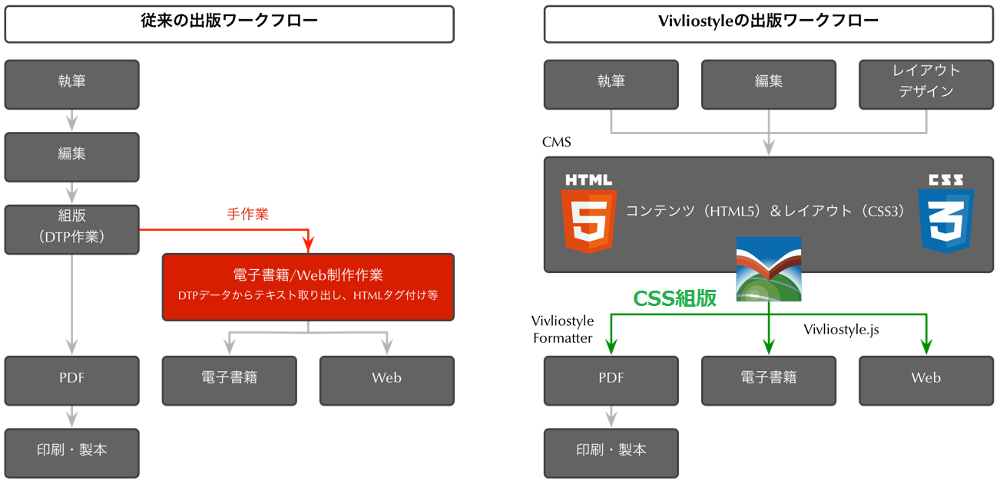

Webブラウザベース
CSS組版システム
Vivliostyle CSS組版のワークフロー

CSS組版とは
- Web ページも電子書籍（EPUB）も、HTML＋CSS で出来ている。
- CSS組版でPDF生成、印刷して紙の本も作れる。
- Vivliostyle以前にも本を作れるCSS組版エンジンはあった。
- CSS組版で本を作っている出版社の例
- 米オライリー社（組版エンジンは “AH Formatter”）
- 米アシェット社（組版エンジンは “Prince”）
「Webブラウザを組版エンジンに」
（Vivliostyleの前に）
そして、Vivliostyle という破壊的革新
“Web組版と印刷用組版を一つに”
- オープンソース、Webブラウザベース、次世代標準のCSS組版
- 次世代CSS標準仕様策定に参加しながら、最新仕様を JavaScript で先行実装
- Webと電子出版の組版を革新、印刷用組版も同じ技術で可能に
- ブラウザ画面と印刷・PDF用で同じエンジンなのでCSSを共通化でき、各媒体に最適にするのも容易
Vivliostyleの技術
- 次世代CSS組版
- Webブラウザ上で高度な組版機能をサポートするJavaScriptライブラリ Vivliostyle.js
- 次世代のCSS組版仕様の標準を、世界に先駆けて実装
-
Webと電子出版の標準仕様の技術の推進
- Web標準技術が、電子出版・組版仕様の基盤に
- しかしWebブラウザベンダーは、ブラウザで印刷物品質の組版を実現することには消極的
- そのギャップを埋めるため、W3C標準仕様策定に参加、縦書き組版仕様、ページ上の図版配置の仕様(*)など担当、実装も進めている。